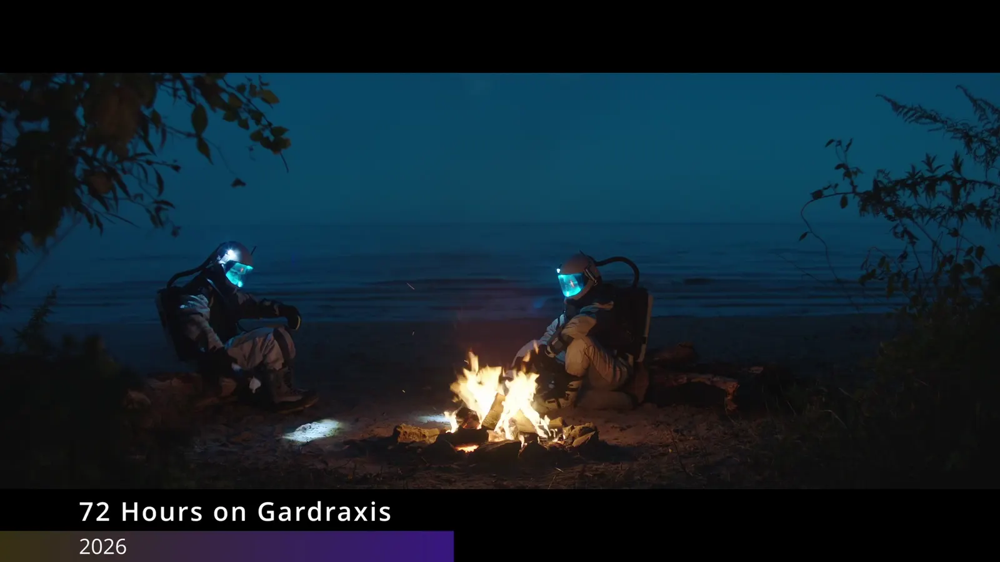
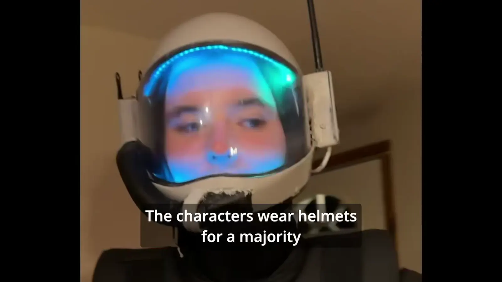
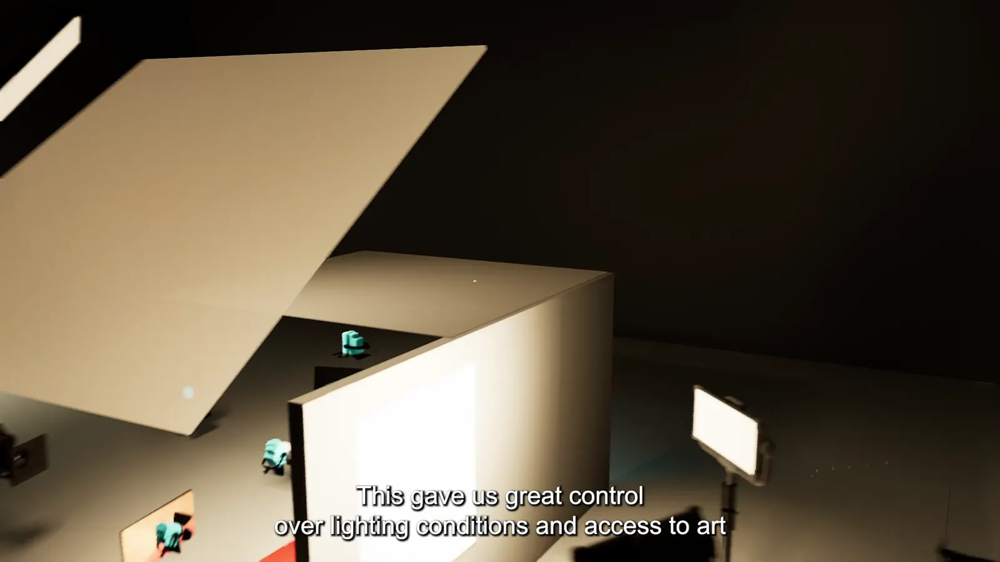

Jack Barry, cinematographer and director of photography: selected work


Jack Barry is a cinematographer based in Los Angeles and upstate New York.
Jack's enthusiasm, creativity, and technical ability allow for his images and visual storytelling to surpass any constraint of genre, story, and spectacle. His ability to realize emotion on screen through operating has allowed him opportunities to capture and tell stories with clients like Coca-Cola, Fox Sports, and others.
With keen sensibility for simple, bold, situational approaches to lighting and framing, Jack has enhanced stories for narrative film production, commercials, and award-winning documentaries with no limitation on scope or budget.
Jack's determination to push new technology, paired with his appreciation for historic and analog methods of filmmaking, has shaped timely, original stories with his unique voice that inspires excitement for the future of cinematography.
- Clients
- Coca-Cola, Fox Sports, NYRA
- Elsewhere
- InstagramYouTubeIMDb
- Contact
- contact@jackabarry.com
Process


For bookings and availability
contact@jackabarry.com- Phone
- (518) 538-6567
- Based in
- Los Angeles, CA and upstate New York
- Elsewhere
- InstagramYouTubeIMDb